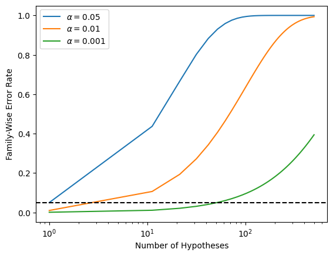
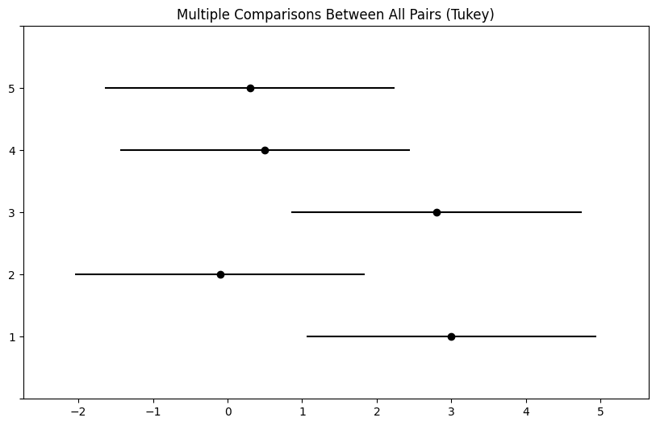
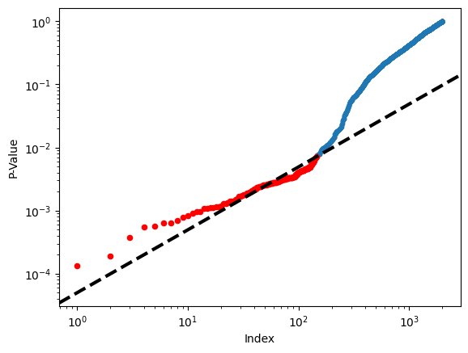
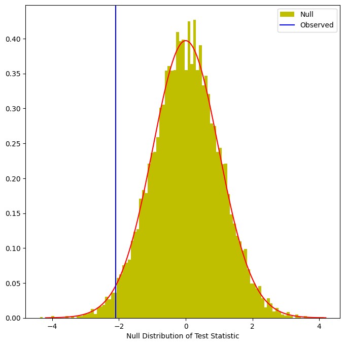
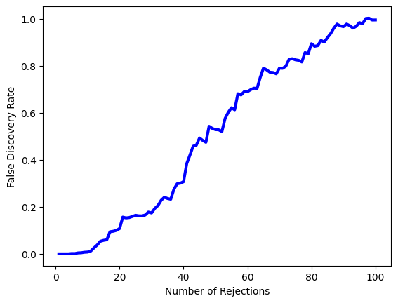

Multiple Testing#

We include our usual imports seen in earlier labs.
import numpy as np
import pandas as pd
import matplotlib.pyplot as plt
import statsmodels.api as sm
from ISLP import load_data
We also collect the new imports needed for this lab.
from scipy.stats import \
(ttest_1samp,
ttest_rel,
ttest_ind,
t as t_dbn)
from statsmodels.stats.multicomp import \
pairwise_tukeyhsd
from statsmodels.stats.multitest import \
multipletests as mult_test
Review of Hypothesis Tests#
We begin by performing some one-sample \(t\)-tests.
First we create 100 variables, each consisting of 10 observations. The first 50 variables have mean \(0.5\) and variance \(1\), while the others have mean \(0\) and variance \(1\).
rng = np.random.default_rng(12)
X = rng.standard_normal((10, 100))
true_mean = np.array([0.5]*50 + [0]*50)
X += true_mean[None,:]
To begin, we use ttest_1samp() from the
scipy.stats module to test \(H_{0}: \mu_1=0\), the null
hypothesis that the first variable has mean zero.
result = ttest_1samp(X[:,0], 0)
result.pvalue
np.float64(0.9307442156164141)
The \(p\)-value comes out to 0.931, which is not low enough to reject the null hypothesis at level \(\alpha=0.05\). In this case, \(\mu_1=0.5\), so the null hypothesis is false. Therefore, we have made a Type II error by failing to reject the null hypothesis when the null hypothesis is false.
We now test \(H_{0,j}: \mu_j=0\) for \(j=1,\ldots,100\). We compute the 100 \(p\)-values, and then construct a vector recording whether the \(j\)th \(p\)-value is less than or equal to 0.05, in which case we reject \(H_{0j}\), or greater than 0.05, in which case we do not reject \(H_{0j}\), for \(j=1,\ldots,100\).
p_values = np.empty(100)
for i in range(100):
p_values[i] = ttest_1samp(X[:,i], 0).pvalue
decision = pd.cut(p_values,
[0, 0.05, 1],
labels=['Reject H0',
'Do not reject H0'])
truth = pd.Categorical(true_mean == 0,
categories=[True, False],
ordered=True)
Since this is a simulated data set, we can create a \(2 \times 2\) table similar to Table 13.2.
pd.crosstab(decision,
truth,
rownames=['Decision'],
colnames=['H0'])
| H0 | True | False |
|---|---|---|
| Decision | ||
| Reject H0 | 5 | 15 |
| Do not reject H0 | 45 | 35 |
Therefore, at level \(\alpha=0.05\), we reject 15 of the 50 false null hypotheses, and we incorrectly reject 5 of the true null hypotheses. Using the notation from Section 13.3, we have \(V=5\), \(S=15\), \(U=45\) and \(W=35\). We have set \(\alpha=0.05\), which means that we expect to reject around 5% of the true null hypotheses. This is in line with the \(2 \times 2\) table above, which indicates that we rejected \(V=5\) of the \(50\) true null hypotheses.
In the simulation above, for the false null hypotheses, the ratio of the mean to the standard deviation was only \(0.5/1 = 0.5\). This amounts to quite a weak signal, and it resulted in a high number of Type II errors. Let’s instead simulate data with a stronger signal, so that the ratio of the mean to the standard deviation for the false null hypotheses equals \(1\). We make only 10 Type II errors.
true_mean = np.array([1]*50 + [0]*50)
X = rng.standard_normal((10, 100))
X += true_mean[None,:]
for i in range(100):
p_values[i] = ttest_1samp(X[:,i], 0).pvalue
decision = pd.cut(p_values,
[0, 0.05, 1],
labels=['Reject H0',
'Do not reject H0'])
truth = pd.Categorical(true_mean == 0,
categories=[True, False],
ordered=True)
pd.crosstab(decision,
truth,
rownames=['Decision'],
colnames=['H0'])
| H0 | True | False |
|---|---|---|
| Decision | ||
| Reject H0 | 2 | 40 |
| Do not reject H0 | 48 | 10 |
Family-Wise Error Rate#
Recall from 13.5 that if the null hypothesis is true for each of \(m\) independent hypothesis tests, then the FWER is equal to \(1-(1-\alpha)^m\). We can use this expression to compute the FWER for \(m=1,\ldots, 500\) and \(\alpha=0.05\), \(0.01\), and \(0.001\). We plot the FWER for these values of \(\alpha\) in order to reproduce Figure 13.2.
m = np.linspace(1, 501)
fig, ax = plt.subplots()
[ax.plot(m,
1 - (1 - alpha)**m,
label=r'$\alpha=%s$' % str(alpha))
for alpha in [0.05, 0.01, 0.001]]
ax.set_xscale('log')
ax.set_xlabel('Number of Hypotheses')
ax.set_ylabel('Family-Wise Error Rate')
ax.legend()
ax.axhline(0.05, c='k', ls='--');

As discussed previously, even for moderate values of \(m\) such as \(50\), the FWER exceeds \(0.05\) unless \(\alpha\) is set to a very low value, such as \(0.001\). Of course, the problem with setting \(\alpha\) to such a low value is that we are likely to make a number of Type II errors: in other words, our power is very low.
We now conduct a one-sample \(t\)-test for each of the first five
managers in the
Fund dataset, in order to test the null
hypothesis that the \(j\)th fund manager’s mean return equals zero,
\(H_{0,j}: \mu_j=0\).
Fund = load_data('Fund')
fund_mini = Fund.iloc[:,:5]
fund_mini_pvals = np.empty(5)
for i in range(5):
fund_mini_pvals[i] = ttest_1samp(fund_mini.iloc[:,i], 0).pvalue
fund_mini_pvals
array([0.00620236, 0.91827115, 0.01160098, 0.6005396 , 0.75578151])
The \(p\)-values are low for Managers One and Three, and high for the other three managers. However, we cannot simply reject \(H_{0,1}\) and \(H_{0,3}\), since this would fail to account for the multiple testing that we have performed. Instead, we will conduct Bonferroni’s method and Holm’s method to control the FWER.
To do this, we use the multipletests() function from the
statsmodels module (abbreviated to mult_test()). Given the \(p\)-values,
for methods like Holm and Bonferroni the function outputs
adjusted \(p\)-values, which
can be thought of as a new set of \(p\)-values that have been corrected
for multiple testing. If the adjusted \(p\)-value for a given hypothesis
is less than or equal to \(\alpha\), then that hypothesis can be
rejected while maintaining a FWER of no more than \(\alpha\). In other
words, for such methods, the adjusted \(p\)-values resulting from the multipletests()
function can simply be compared to the desired FWER in order to
determine whether or not to reject each hypothesis. We will later
see that we can use the same function to control FDR as well.
The mult_test() function takes \(p\)-values and a method argument, as well as an optional
alpha argument. It returns the decisions (reject below)
as well as the adjusted \(p\)-values (bonf).
reject, bonf = mult_test(fund_mini_pvals, method = "bonferroni")[:2]
reject
array([ True, False, False, False, False])
The \(p\)-values bonf are simply the fund_mini_pvalues multiplied by 5 and truncated to be less than
or equal to 1.
bonf, np.minimum(fund_mini_pvals * 5, 1)
(array([0.03101178, 1. , 0.05800491, 1. , 1. ]),
array([0.03101178, 1. , 0.05800491, 1. , 1. ]))
Therefore, using Bonferroni’s method, we are able to reject the null hypothesis only for Manager One while controlling FWER at \(0.05\).
By contrast, using Holm’s method, the adjusted \(p\)-values indicate that we can reject the null hypotheses for Managers One and Three at a FWER of \(0.05\).
mult_test(fund_mini_pvals, method = "holm", alpha=0.05)[:2]
(array([ True, False, True, False, False]),
array([0.03101178, 1. , 0.04640393, 1. , 1. ]))
As discussed previously, Manager One seems to perform particularly well, whereas Manager Two has poor performance.
fund_mini.mean()
Manager1 3.0
Manager2 -0.1
Manager3 2.8
Manager4 0.5
Manager5 0.3
dtype: float64
Is there evidence of a meaningful difference in performance between
these two managers? We can check this by performing a paired \(t\)-test using the ttest_rel() function
from scipy.stats:
ttest_rel(fund_mini['Manager1'],
fund_mini['Manager2']).pvalue
np.float64(0.038391072368079586)
The test results in a \(p\)-value of 0.038, suggesting a statistically significant difference.
However, we decided to perform this test only after examining the data
and noting that Managers One and Two had the highest and lowest mean
performances. In a sense, this means that we have implicitly
performed \({5 \choose 2} = 5(5-1)/2=10\) hypothesis tests, rather than
just one, as discussed in Section 13.3.2. Hence, we use the
pairwise_tukeyhsd() function from
statsmodels.stats.multicomp to apply Tukey’s method
in order to adjust for multiple testing. This function takes
as input a fitted ANOVA regression model, which is
essentially just a linear regression in which all of the predictors
are qualitative. In this case, the response consists of the monthly
excess returns achieved by each manager, and the predictor indicates
the manager to which each return corresponds.
returns = np.hstack([fund_mini.iloc[:,i] for i in range(5)])
managers = np.hstack([[i+1]*50 for i in range(5)])
tukey = pairwise_tukeyhsd(returns, managers)
print(tukey.summary())
Multiple Comparison of Means - Tukey HSD, FWER=0.05
===================================================
group1 group2 meandiff p-adj lower upper reject
---------------------------------------------------
1 2 -3.1 0.1862 -6.9865 0.7865 False
1 3 -0.2 0.9999 -4.0865 3.6865 False
1 4 -2.5 0.3948 -6.3865 1.3865 False
1 5 -2.7 0.3152 -6.5865 1.1865 False
2 3 2.9 0.2453 -0.9865 6.7865 False
2 4 0.6 0.9932 -3.2865 4.4865 False
2 5 0.4 0.9986 -3.4865 4.2865 False
3 4 -2.3 0.482 -6.1865 1.5865 False
3 5 -2.5 0.3948 -6.3865 1.3865 False
4 5 -0.2 0.9999 -4.0865 3.6865 False
---------------------------------------------------
The pairwise_tukeyhsd() function provides confidence intervals
for the difference between each pair of managers (lower and
upper), as well as a \(p\)-value. All of these quantities have
been adjusted for multiple testing. Notice that the \(p\)-value for the
difference between Managers One and Two has increased from \(0.038\) to
\(0.186\), so there is no longer clear evidence of a difference between
the managers’ performances. We can plot the confidence intervals for
the pairwise comparisons using the plot_simultaneous() method
of tukey. Any pair of intervals that don’t overlap indicates a significant difference at the nominal level of 0.05. In this case,
no differences are considered significant as reported in the table above.
fig, ax = plt.subplots(figsize=(8,8))
tukey.plot_simultaneous(ax=ax);

False Discovery Rate#
Now we perform hypothesis tests for all 2,000 fund managers in the
Fund dataset. We perform a one-sample \(t\)-test
of \(H_{0,j}: \mu_j=0\), which states that the
\(j\)th fund manager’s mean return is zero.
fund_pvalues = np.empty(2000)
for i, manager in enumerate(Fund.columns):
fund_pvalues[i] = ttest_1samp(Fund[manager], 0).pvalue
There are far too many managers to consider trying to control the FWER.
Instead, we focus on controlling the FDR: that is, the expected fraction of rejected null hypotheses that are actually false positives.
The multipletests() function (abbreviated mult_test()) can be used to carry out the Benjamini–Hochberg procedure.
fund_qvalues = mult_test(fund_pvalues, method = "fdr_bh")[1]
fund_qvalues[:10]
array([0.08988921, 0.991491 , 0.12211561, 0.92342997, 0.95603587,
0.07513802, 0.0767015 , 0.07513802, 0.07513802, 0.07513802])
The q-values output by the Benjamini–Hochberg procedure can be interpreted as the smallest FDR threshold at which we would reject a particular null hypothesis. For instance, a \(q\)-value of \(0.1\) indicates that we can reject the corresponding null hypothesis at an FDR of 10% or greater, but that we cannot reject the null hypothesis at an FDR below 10%.
If we control the FDR at 10%, then for how many of the fund managers can we reject \(H_{0,j}: \mu_j=0\)?
(fund_qvalues <= 0.1).sum()
np.int64(146)
We find that 146 of the 2,000 fund managers have a \(q\)-value below 0.1; therefore, we are able to conclude that 146 of the fund managers beat the market at an FDR of 10%. Only about 15 (10% of 146) of these fund managers are likely to be false discoveries.
By contrast, if we had instead used Bonferroni’s method to control the FWER at level \(\alpha=0.1\), then we would have failed to reject any null hypotheses!
(fund_pvalues <= 0.1 / 2000).sum()
np.int64(0)
Figure 13.6 displays the ordered
\(p\)-values, \(p_{(1)} \leq p_{(2)} \leq \cdots \leq p_{(2000)}\), for
the Fund dataset, as well as the threshold for rejection by the
Benjamini–Hochberg procedure. Recall that the Benjamini–Hochberg
procedure identifies the largest \(p\)-value such that \(p_{(j)}<qj/m\),
and rejects all hypotheses for which the \(p\)-value is less than or
equal to \(p_{(j)}\). In the code below, we implement the
Benjamini–Hochberg procedure ourselves, in order to illustrate how it
works. We first order the \(p\)-values. We then identify all \(p\)-values
that satisfy \(p_{(j)}<qj/m\) (sorted_set_). Finally, selected_
is a boolean array indicating which \(p\)-values
are less than or equal to the largest
\(p\)-value in sorted_[sorted_set_]. Therefore, selected_ indexes the
\(p\)-values rejected by the Benjamini–Hochberg procedure.
sorted_ = np.sort(fund_pvalues)
m = fund_pvalues.shape[0]
q = 0.1
sorted_set_ = np.where(sorted_ < q * np.linspace(1, m, m) / m)[0]
if sorted_set_.shape[0] > 0:
selected_ = fund_pvalues < sorted_[sorted_set_].max()
sorted_set_ = np.arange(sorted_set_.max())
else:
selected_ = []
sorted_set_ = []
We now reproduce the middle panel of Figure 13.6.
fig, ax = plt.subplots()
ax.scatter(np.arange(0, sorted_.shape[0]) + 1,
sorted_, s=10)
ax.set_yscale('log')
ax.set_xscale('log')
ax.set_ylabel('P-Value')
ax.set_xlabel('Index')
ax.scatter(sorted_set_+1, sorted_[sorted_set_], c='r', s=20)
ax.axline((0, 0), (1,q/m), c='k', ls='--', linewidth=3);

A Re-Sampling Approach#
Here, we implement the re-sampling approach to hypothesis testing
using the Khan dataset, which we investigated in
Section 13.5. First, we merge the training and
testing data, which results in observations on 83 patients for
2,308 genes.
Khan = load_data('Khan')
D = pd.concat([Khan['xtrain'], Khan['xtest']])
D['Y'] = pd.concat([Khan['ytrain'], Khan['ytest']])
D['Y'].value_counts()
/var/folders/16/8y65_zv174qgdp4ktlmpv12h0000gq/T/ipykernel_26045/2840220789.py:3: PerformanceWarning: DataFrame is highly fragmented. This is usually the result of calling `frame.insert` many times, which has poor performance. Consider joining all columns at once using pd.concat(axis=1) instead. To get a de-fragmented frame, use `newframe = frame.copy()`
D['Y'] = pd.concat([Khan['ytrain'], Khan['ytest']])
Y
2 29
4 25
3 18
1 11
Name: count, dtype: int64
There are four classes of cancer. For each gene, we compare the mean
expression in the second class (rhabdomyosarcoma) to the mean
expression in the fourth class (Burkitt’s lymphoma). Performing a
standard two-sample \(t\)-test
using ttest_ind() from scipy.stats on the \(11\)th
gene produces a test-statistic of -2.09 and an associated \(p\)-value
of 0.0412, suggesting modest evidence of a difference in mean
expression levels between the two cancer types.
D2 = D[lambda df:df['Y'] == 2]
D4 = D[lambda df:df['Y'] == 4]
gene_11 = 'G0011'
observedT, pvalue = ttest_ind(D2[gene_11],
D4[gene_11],
equal_var=True)
observedT, pvalue
(np.float64(-2.0936330736768185), np.float64(0.04118643782678394))
However, this \(p\)-value relies on the assumption that under the null hypothesis of no difference between the two groups, the test statistic follows a \(t\)-distribution with \(29+25-2=52\) degrees of freedom. Instead of using this theoretical null distribution, we can randomly split the 54 patients into two groups of 29 and 25, and compute a new test statistic. Under the null hypothesis of no difference between the groups, this new test statistic should have the same distribution as our original one. Repeating this process 10,000 times allows us to approximate the null distribution of the test statistic. We compute the fraction of the time that our observed test statistic exceeds the test statistics obtained via re-sampling.
B = 10000
Tnull = np.empty(B)
D_ = np.hstack([D2[gene_11], D4[gene_11]])
n_ = D2[gene_11].shape[0]
D_null = D_.copy()
for b in range(B):
rng.shuffle(D_null)
ttest_ = ttest_ind(D_null[:n_],
D_null[n_:],
equal_var=True)
Tnull[b] = ttest_.statistic
(np.abs(Tnull) < np.abs(observedT)).mean()
np.float64(0.9602)
This fraction, 0.0398, is our re-sampling-based \(p\)-value. It is almost identical to the \(p\)-value of 0.0412 obtained using the theoretical null distribution. We can plot a histogram of the re-sampling-based test statistics in order to reproduce Figure 13.7.
fig, ax = plt.subplots(figsize=(8,8))
ax.hist(Tnull,
bins=100,
density=True,
facecolor='y',
label='Null')
xval = np.linspace(-4.2, 4.2, 1001)
ax.plot(xval,
t_dbn.pdf(xval, D_.shape[0]-2),
c='r')
ax.axvline(observedT,
c='b',
label='Observed')
ax.legend()
ax.set_xlabel("Null Distribution of Test Statistic");

The re-sampling-based null distribution is almost identical to the theoretical null distribution, which is displayed in red.
Finally, we implement the plug-in re-sampling FDR approach outlined in
Algorithm 13.4. Depending on the speed of your
computer, calculating the FDR for all 2,308 genes in the Khan
dataset may take a while. Hence, we will illustrate the approach on a
random subset of 100 genes. For each gene, we first compute the
observed test statistic, and then produce 10,000 re-sampled test
statistics. This may take a few minutes to run. If you are in a rush,
then you could set B equal to a smaller value (e.g. B=500).
m, B = 100, 10000
idx = rng.choice(Khan['xtest'].columns, m, replace=False)
T_vals = np.empty(m)
Tnull_vals = np.empty((m, B))
for j in range(m):
col = idx[j]
T_vals[j] = ttest_ind(D2[col],
D4[col],
equal_var=True).statistic
D_ = np.hstack([D2[col], D4[col]])
D_null = D_.copy()
for b in range(B):
rng.shuffle(D_null)
ttest_ = ttest_ind(D_null[:n_],
D_null[n_:],
equal_var=True)
Tnull_vals[j,b] = ttest_.statistic
Next, we compute the number of rejected null hypotheses \(R\), the estimated number of false positives \(\widehat{V}\), and the estimated FDR, for a range of threshold values \(c\) in Algorithm 13.4. The threshold values are chosen using the absolute values of the test statistics from the 100 genes.
cutoffs = np.sort(np.abs(T_vals))
FDRs, Rs, Vs = np.empty((3, m))
for j in range(m):
R = np.sum(np.abs(T_vals) >= cutoffs[j])
V = np.sum(np.abs(Tnull_vals) >= cutoffs[j]) / B
Rs[j] = R
Vs[j] = V
FDRs[j] = V / R
Now, for any given FDR, we can find the genes that will be rejected. For example, with FDR controlled at 0.1, we reject 15 of the 100 null hypotheses. On average, we would expect about one or two of these genes (i.e. 10% of 15) to be false discoveries. At an FDR of 0.2, we can reject the null hypothesis for 28 genes, of which we expect around six to be false discoveries.
The variable idx stores which
genes were included in our 100 randomly-selected genes. Let’s look at
the genes whose estimated FDR is less than 0.1.
sorted(idx[np.abs(T_vals) >= cutoffs[FDRs < 0.1].min()])
['G0097',
'G0129',
'G0182',
'G0714',
'G0812',
'G0941',
'G0982',
'G1020',
'G1022',
'G1090',
'G1320',
'G1634',
'G1697',
'G1853',
'G1854',
'G1994',
'G2017',
'G2115',
'G2193']
At an FDR threshold of 0.2, more genes are selected, at the cost of having a higher expected proportion of false discoveries.
sorted(idx[np.abs(T_vals) >= cutoffs[FDRs < 0.2].min()])
['G0097',
'G0129',
'G0158',
'G0182',
'G0242',
'G0552',
'G0679',
'G0714',
'G0751',
'G0812',
'G0908',
'G0941',
'G0982',
'G1020',
'G1022',
'G1090',
'G1240',
'G1244',
'G1320',
'G1381',
'G1514',
'G1634',
'G1697',
'G1768',
'G1853',
'G1854',
'G1907',
'G1994',
'G2017',
'G2115',
'G2193']
The next line generates Figure 13.11, which is similar to Figure 13.9, except that it is based on only a subset of the genes.
fig, ax = plt.subplots()
ax.plot(Rs, FDRs, 'b', linewidth=3)
ax.set_xlabel("Number of Rejections")
ax.set_ylabel("False Discovery Rate");
